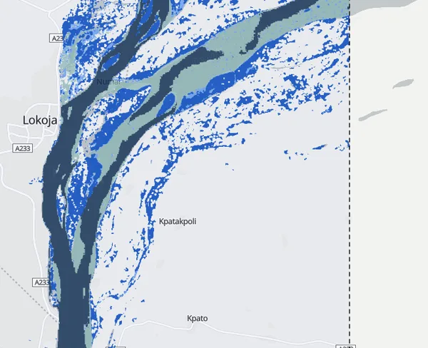

Drag across the map to draw your area
The basemap could not load. The analysis still works.
Radar sees through cloud. Search a place and map the ground that turned to water between two Sentinel-1 images, anywhere since 2014.
